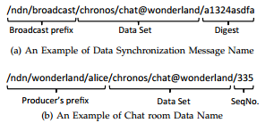

2017/06/22 - Chronos:Serverless Multi-User Chat Over NDN¶
Zhenkai Zhu∗, Chaoyi Bian†, Alexander Afanasyev∗ , Van Jacobson‡, and Lixia Zhang∗
∗ {zhenkai, afanasev, lixia} @cs.ucla.edu, UCLA, Los Angeles, California, USA
†bcy@pku.edu.cn, Peking University, Beijing, China
‡van@parc.com, PARC, Palo Alto, California, USA
Link : NDN technical Report NDN-0008, 2012
Why I read this technical report?¶
This is an obsolete version of the paper that announce in IEEE ICNP 2013 - Let’s ChronoSync: Decentralized Dataset State Synchronization in Named Data Networking. When I read the latest paper, I notice that there is a few details about how ChronoChat works on ChronoSync, such as the situation of only one participant join the chat room, and how to know all the other participants in chartroom. So I need to find the answer in this old paper. Fortunately , I found some descriptions about my question.
Keynote of this report¶
Chronos Design¶
Chronos participants interact using two types of Interest/Data message exchanges: synchronization (sync) and chat data.
- A sync Interest represents the sender’s knowledge of the current chat data set in form of cryptographic digest, obtained using digest tree, and is delivered to every other participant.
- As soon as a participant discovers new knowledge about the chat room state, it sends out chat data Interests to pull actual messages from their originators.
The participants periodically send “heartbeat” messages if they have no chat messages to send.
Naming Rules¶
The name for a sync message starts with a broadcast prefix.
The chat data name consists of a unique prefix that identifies the producer and is used to efficiently route the Interest, the chat room identifier, and the message sequence number.
Data Structures¶
The size of the digest log can be constrained by a desired upper bound using periodical purging of old entries.
Whenever sync Interest gets satisfied or expires, one sends out another one that carries the latest root digest.
Participant Join/Leave¶
A newcomer probes for information about a chat room by sending out a sync Interest with the reserved digest of the empty set.
If the newcomer is the only participant in the chat room, the Interest will not bring back anything. By the time the Interest expires, the newcomer updates the empty digest tree with his default initial producer status with sequence number being zero and sends out an new Interest with updated digest. Otherwise, the existing participants recognize the reserved “empty” digest and reply with all the producer statuses, which will be used by the newcomer to build his own digest tree.
Participants should inform others in the room before actually leaving. That is, the participant that intends to leave should reply to the sync Interest with the data name for an “unavailable” message.